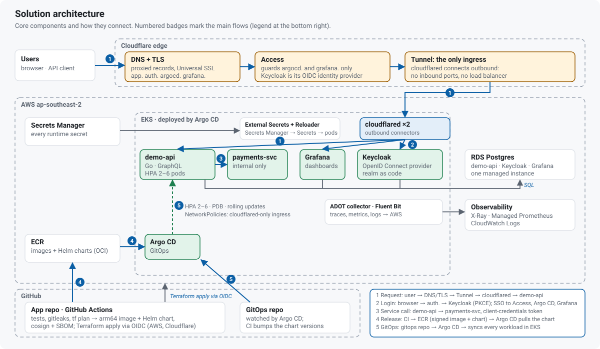
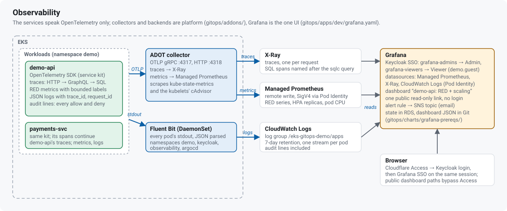
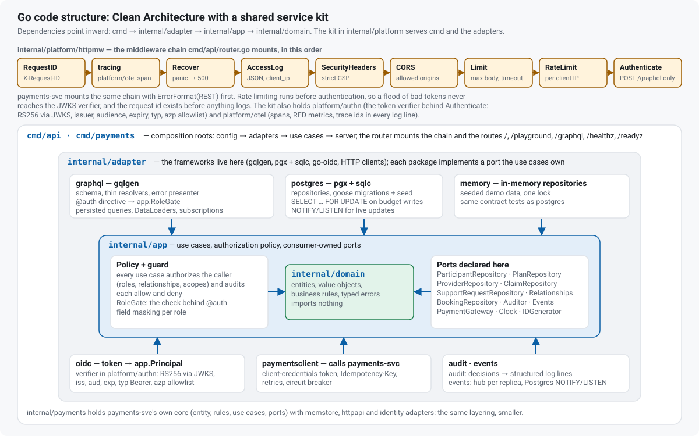
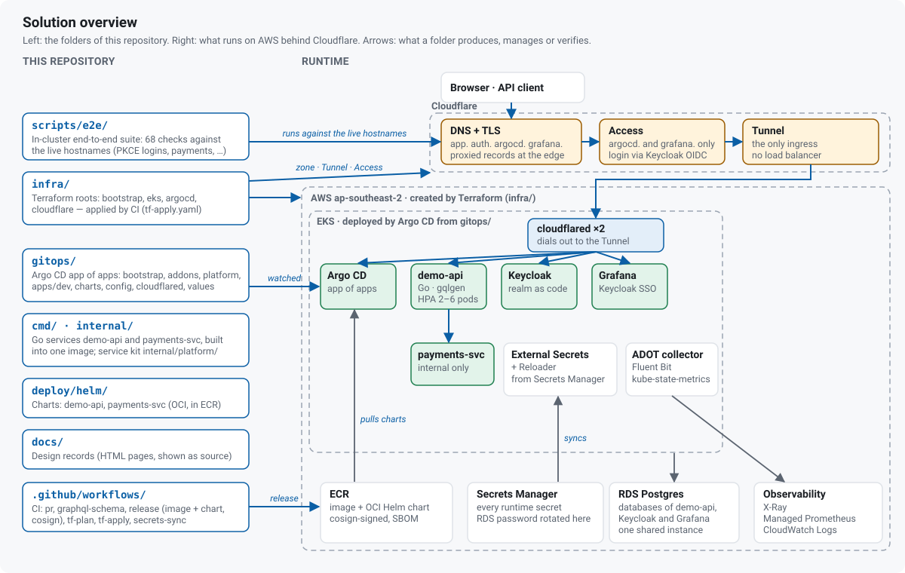

eks-gitops-demo
Go GraphQL API on AWS EKS behind a Cloudflare Zero Trust edge, with Keycloak single sign-on, GitOps by Argo CD and Terraform applied by CI; live at app.frankbluemind.com.
Domain: participants · plans · budgets · providers · support requests · claims · payments · Built: design-first · AI-assisted implementation under the author's direction and review · the Try-it table re-checked live at every publish · source

Try it (2 minutes)
| Open | Expect |
|---|---|
| app.frankbluemind.com | token walkthrough: PKCE login (guest account) → decoded token → first query |
| app.frankbluemind.com/playground | GraphiQL with login bar (same account); introspection on |
| auth.frankbluemind.com/realms/demo/.well-known/openid-configuration | OIDC discovery, 200; /admin and master realm → 404 at the edge |
| grafana.frankbluemind.com/public-dashboards/… | "demo-api: RED + scaling", public, no login, last 30 min |
| argocd.frankbluemind.com · grafana.frankbluemind.com | 302 → Cloudflare Access → Keycloak → signed in |
curl -s https://app.frankbluemind.com/readyz | {"status":"ready"}, no login; POST /graphql without a token → 401 |
Guest login: read-only, provided separately.
How it's connected
- Request: browser / API client → DNS + TLS → (Access for
argocd.,grafana.) → Tunnel → cloudflared → demo-api; token verified by the API - Login: browser →
auth.→ Keycloak, Authorization Code + PKCE; same Keycloak session for Access, Argo CD, Grafana - Service call: demo-api → payments-svc; client-credentials token, audience
payments-svc;Idempotency-Key= claim id - Release: merge → arm64 image + Helm chart → cosign + SBOM → ECR → gitops bump; Argo CD pulls the chart
- GitOps: gitops repo → Argo CD → every workload, add-on, policy; Terraform via CI (GitHub OIDC) → AWS + Cloudflare
Component breakdown
| Component | Role | Why it's there |
|---|---|---|
| Cloudflare DNS + TLS | proxied records, Universal SSL | no origin address exposed |
| Access | login wall, Keycloak as IdP | admin tools never anonymous |
| Tunnel | only route in, remote rules | no load balancer, no inbound ports |
| cloudflared | two outbound connectors | survives a pod or node loss |
| demo-api | Go GraphQL API, HPA 2–6 | the product; stateless pods |
| payments-svc | internal payment processor mock | service-to-service auth, idempotency |
| Keycloak | OpenID Connect, realm as code | one identity source |
| Argo CD | GitOps, app of apps | cluster converges on Git |
| Grafana | one UI, SSO, public dashboard | observability without AWS console |
| External Secrets + Reloader | Secrets Manager → Secrets → pod rolls | no secret in Git, no manual restart |
| ADOT collector | OTLP → X-Ray, Managed Prometheus | apps speak only OpenTelemetry |
| Fluent Bit | stdout → CloudWatch Logs | logs with trace + request ids |
| RDS Postgres | demo-api, Keycloak, Grafana data | managed, rotated password |
| Secrets Manager | every runtime secret | one place to rotate |
| ECR | signed images + OCI charts | release store Argo CD pulls |
| X-Ray / AMP / CloudWatch | traces, metrics, logs | nothing to run or scale |
| GitHub Actions | tests, scans, release, Terraform | same gates every change; OIDC |
| Terraform | AWS + Cloudflare resources | infrastructure reviewed as code |
At a glance
Go server
- Clean Architecture:
domain←app← adapters ←cmd; consumer-owned ports; one composition root per service · code - Middleware chain: request id → tracing → recover → access log → security headers → CORS → body limit + 10 s timeout → rate limit → token verify · httpmw
- Context + shutdown: per-request deadline; cancellation →
CANCELLED; SIGTERM →/readyz503 → 3 s → 20 s drain · server kit - JSON logs with request, trace, span ids; OpenTelemetry traces + RED metrics; audit line per decision · otel
- Table-driven tests,
-race, contract suite on memory + Postgres, coverage gate, vet + lint in CI · pr.yaml
GraphQL
- gqlgen, schema-first; thin resolvers; breaking-change gate in CI · schema
- DataLoaders per response: one query per field level, no N+1 · loaders
@authdirective → RoleGate, refusals audited; typed union errors · gate- APQ live · trusted-document allowlist mode built and tested, off in the demo · depth 8 · complexity 300 · 32 KiB documents · persisted
- WebSocket subscriptions, Postgres NOTIFY/LISTEN across pods; idempotency keys on claims + payments · events
EKS
- EKS 1.37, access entries; arm64 node group (AL2023, t4g, 2–4); add-ons VPC CNI · CoreDNS · kube-proxy · Pod Identity agent · infra/eks
- Pod Identity for every AWS call; no static keys · pod_identity.tf
- Argo CD app-of-apps: root → addons → platform → apps; sync waves; 14 ApplicationSets; Helm renderer; charts from ECR, pull token refreshed every 6 h by External Secrets · bootstrap · ecr token
- Platform: External Secrets + Reloader · ADOT · Fluent Bit · metrics-server + kube-state-metrics · addons
- demo-api: HPA 2–6 · PDB ·
/readyz+/healthz· rolling updates · preStop drain; NetworkPolicies (VPC CNI network policy agent): cloudflared-only ingress · chart · policies
Auth
- OIDC discovery + JWKS (RS256); issuer · audience · expiry ·
typBearer ·azpallowlist; ID tokens rejected · authn - Authorization Code + PKCE (S256), public client
spa; client credentials, audience-scoped (demo-api-svc→ payments-svc,payments:write) · realm - Refresh-token rotation · brute-force protection · 5-minute access tokens
- Roles → RoleGate → relationship policy → field masking; separation of duties · policy
- SSO across app · Argo CD · Grafana (groups → roles, strict); Access with Keycloak as IdP · Argo CD RBAC · Grafana
Pipelines
- PR: vet · race tests · coverage · codegen drift · lint · Helm lint + kubeconform · gitleaks · gosec · govulncheck · Trivy · tf plan · pr.yaml
- Release: arm64 image + OCI chart → ECR, digest-pinned, SPDX SBOM, keyless cosign → gitops bump → Argo CD sync → rolling update · release.yaml
- Infra: Terraform roots
bootstrap/eks/argocd/cloudflare; CI apply via GitHub OIDC; no stored keys · tf-apply.yaml - Secrets: SOPS in Git → CI → Secrets Manager → External Secrets → Reloader; RDS master password rotated by Secrets Manager · secrets/
- CI holds no cluster credentials; rollback = revert the bump
Cloudflare
- Tunnel = only ingress: cloudflared ×2 outbound · remote rules · no inbound ports · no load balancer · tunnel.tf
- Access: Keycloak as OIDC IdP · per-host apps (
argocd.,grafana.) · bypass for the public dashboard · access.tf - Zone: proxied DNS · Universal SSL · Full (strict) · TLS 1.2+ · HTTPS only · zone.tf
auth.allowlist/realms/demo+/resources, dot segments → 404; Browser Integrity Check on; 301s from the old domain · redirects.tfCF-Connecting-IPtrusted only because NetworkPolicy admits cloudflared alone; per-IP rate limit before auth · cloudflared/
Diagrams
Observability

Go code structure

cmd → adapters → internal/app → internal/domain, dependencies inward · three authorization layers: @auth, relationship policy, field maskingRepository to runtime

infra/ → AWS + Cloudflare, gitops/ → Argo CD, workflows → ECR + Secrets Manager, scripts/e2e/ → live hostnames)| Folder | Holds |
|---|---|
infra/ | Terraform roots: bootstrap · eks · argocd · cloudflare |
gitops/ | Argo CD repo: bootstrap · addons · platform · apps/dev · charts · config/keycloak · cloudflared · values |
cmd/, internal/ | Go services + service kit (internal/platform/) |
deploy/helm/ | charts demo-api, payments-svc |
.github/workflows/ | pr · graphql-schema · release · tf-plan · tf-apply · secrets-sync |
scripts/e2e/ | in-cluster e2e suite, false-pass self-test |
docs/ | design records, these diagrams |
Zero Trust and hardening
- One ingress: Cloudflare Tunnel · no load balancer · cloudflared dials out · Access on
argocd.+grafana.· the API verifies its own tokens auth.allowlist:/realms/demo+/resources· dot segments → 404 · admin console and master realm unreachable- NetworkPolicies (enforced by the VPC CNI network policy agent): cloudflared-only to demo-api, Keycloak, Grafana (+ e2e runner, realm-import Jobs) · payments-svc ← demo-api only
- Client IP:
CF-Connecting-IP· per-IP rate limit before auth · the JWKS verifier never sees the flood - Tokens: RS256/JWKS · issuer · audience
demo-api· expiry ·typBearer ·azpallowlist · refresh rotation · brute-force protection - Limits + CSP: 32 KiB documents · depth 8 · complexity 300 · bounded labels · APQ live, allowlist mode built (off in the demo) · strict CSP (
default-src 'none'for JSON) · audit line per decision · request id in every error - Secrets: SOPS → CI → Secrets Manager → External Secrets → Reloader · RDS master password rotated by Secrets Manager · placeholders only in the realm file
- Supply chain: digest-pinned image + chart · SPDX SBOM · keyless cosign, verified in the release
Verified live
- 68/68 in-cluster e2e checks (scripts/e2e/): PKCE for 5 users · token rejections · field masking · payment idempotency · cross-pod subscriptions · bounded labels; a self-test proves each check rejects bad evidence (added after an independent audit found a false pass) · how
- Zero-downtime secret rotation: file reload → Reloader roll, 0 failed requests
- Cloudflare cutover: 73,836 probe requests, 0 errors · browser SSO into Argo CD + Grafana, admin and read-only personas
Design records
Deployment architecture
ownership map · bootstrap · Argo CD + gitops repo · Helm + ECR · release flow · runtime · secrets · scaling · decisions
App, identity, observability
business domain · GraphQL showcase · identity and access · OpenTelemetry · public-demo guardrails · phased plan
Code architecture
clean architecture in Go · shared service kit · two services, one kit
Cloudflare in front of EKS
decision · mental models · identity and tokens · migration runbook · acceptance checks · gotchas · written before the domain move ("today" = the ALB era, old hostnames)
Source: eliteGoblin/eks-gitops-demo-showcase (published snapshot; schema changelog) · CI/CD and Argo CD run from private working copies · gitops/ = what Argo CD watches